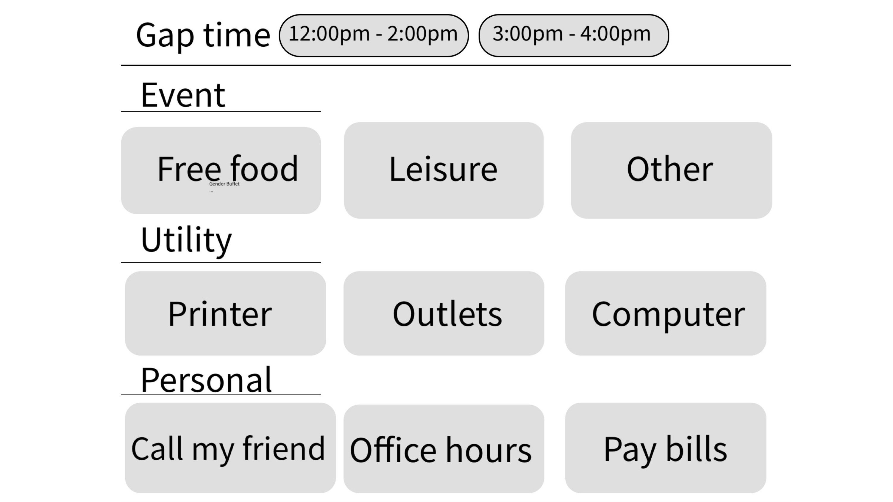

Persona: Mary is a commuter studying at UCSD, she had a hard time managing gaps between lectures. Sometimes she needs to print something, get her device charged and other times, she wants to find place to eat. To be more specific, last Friday, she has two hours gap time from 12:00 to 2:00pm. She wants to find a free food events to eat at and have fun at the same time.
Video:
PDF:


